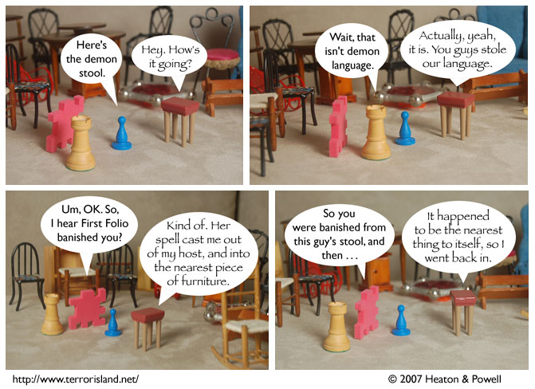

Strip #167
— Friday, July 6, 2007
Interestingly, this means that First Folio successfully fulfilled her contract.
Notes, Thoughts, &c.
Ben’s Notes
I know some people think Papyrus is overused, but it was clearly the font best suited to this. When a possessed (technically repossessed, I suppose) stool talks, it sounds exactly like that. And once you learn more about the history of this particular demon, it’ll make even more sense than it does now.
Also, I used Papyrus last time this stool showed up in the strip, and we need to keep things consistent.
Lewis’s Notes
Claim: “The Princess Bride” is the best romantic comedy ever made.
This is part of a new effort where I try and present you all with subjective claims that are nonetheless difficult to dispute.